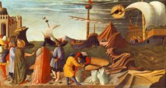

The Legend of the Wheat Famine
In addition to several stories that speak of St.
Nicholas, the guardian of sailors, there is also the legend that credits him
with powers to multiply grain during a period of famine. This is one of the
oldest St. Nicholas legends. Three early Byzantine versions exist.
According to The
Golden Legend:
“It was so on a time that all the province of S.
Nicholas suffered great famine, in such wise that vitaille failed. And then
this holy man heard say that certain ships laden with wheat were arrived in the
haven. And anon he went thither and prayed the mariners that they would succour
the perished at least with an hundred muyes of wheat of every ship. And they
said: ‘Father we dare not, for it is meted and measured, and we must give
reckoning thereof in the garners of the Emperor in Alexandria.’ and the holy
man said to them: ‘Do this that I have said to you, and I promise, in the truth
of God, that it shall not be lessed for minished when ye shall come to the
garners.’ And when they had delivered so much out of every ship, they came into
Alexandria and delivered the measure that they had received. And then they
recounted the miracle to the ministers of the Emperor, and worshipped and
praised strongly God and his servant Nicholas. Then this holy man distributed
the wheat to every man after that he had need, in such wise that it sufficed
for two years, not only for to sell but also to sow.” (Jacobus de Voragine, “The Golden Legend: Lives of the Saints,”
translated by William Caxton, pp. 64-65)
Another version states that during a period of
famine in Lycia, a grain ship, which is about to call at the port of Andriake,
is hit by a violent storm. It’s pierced by a rock and sinks in the bay. Bishop
Nicholas himself appears at the shore and, after much difficulty, the entire
crew is saved.
The bishop, however, remains in prayer on the quay;
he stills the waves, which then recede. The storm ceases to roll the waters in
the harbor, the level of the sea falls, and the wrecked vessel and its spilled
cargo become visible.
When the bay is entirely dry, a new miracle comes to
pass: the grain sows itself! It shoots up, grows and ripens before the
astonished eyes of the people on shore. The people who until then have watched
in awe hurriedly begin to reap the rich harvest, only to discover that a divine
hand is assisting them again. The threshing and storing is done in the same
miraculous way, so that when Nicholas gives the sign and the sea reclaims its
rights, the storehouses of Myra are full of precious grain.
Another version of the legend states that five years
after Nicholas died, there’s a dangerous famine. St. Nicholas appears as a
phantom to a man called Theodolus, and urges him to hold a service of petition
at his tomb in Myra. The congregation complies and gathers that night at the
tomb. There’s a fierce earthquake at midnight, the coffin opens, and the odor
of myrrh that comes from it satiates the starving and helps the blind and the
lame.
A few days later, St. Nicholas appears as a patriarch,
wearing a miter that seems to be made of fiery flames. He walks across the
water to board five grain ships traveling from Cyprus to Constantinople. He
purchases grain, makes a down payment, and urges the captains to take their
boats to Myra. But the devil convinces them that the whole thing is a fraud,
and they refuse to change course. When a storm arises and then quiets down,
they change their minds and follow St. Nicholas’ orders after all.
They land in Myra, calm the population, tell them
what has happened, and sell the grain to them. When they visit the tomb of St.
Nicholas, they recognize that it was he who appeared to them. They place the
down payment on his grave as an offering, and the people hold a feast in his
honor.
St. Nicholas emerges from these legends as a
forceful and resourceful hero, a fighting Saint who defeats his enemies, and
who stands by his people in times of need – by normal as well as miraculous
means, during his lifetime and even after his death.
Thought to Ponder: As early as the 1830s
newspapers in America were filled with blandishments designed with “Christmas
shoppers” in mind. Everything from raisins for baked goods to pianofortes for
the parlor to uplifting books for the mind and soul were pushed via the papers.
Merchants were quick to realize the potential of the gift-giving season and
capitalize on the growing importance of Christmas. Santa Clauses had begun to
appear on street corners and in stores by 1850. Philadelphia storeowners were
among the first to offer seasonal employment to those willing to impersonate
Santa.
The trend did not go unnoticed. A Terre Haute (Ind.) newspaper editor commented on the frivolity associated with the 1855 season. He was bemused by the “gambol,” gift exchanges, and the person of “Santa Clause” that seemed to dominate the holiday. He wondered if such behavior was the proper way of celebrating the birth of Christ. In a telling comment, he noted that it was probably already too late to change things, as the trend was already well established.
Thought to Discuss around the Dinner Table: While others are pushing and shoving, how can we each remind the cashiers and sales clerks that the real reason for the season is the birth of our Lord and God and Savior, Jesus Christ?
How can we do this all year round? Perhaps by sharing with them what this holy season is all about. How can we find ways to share our joy as Ephrem the Syrian did?
“The Lofty One became like a little child, yet
hidden in Him was a treasure of Wisdom that suffices for all. He was lofty but
He sucked Mary’s milk, and from His blessings all creation sucks. He is the
Living breast of living breath; by His life the dead were suckled, and they
revived. Without the breath of air no one can live; without the power of the
Son no one can rise. Upon the living breath of the One Who vivifies all depend
the living beings above and below. As indeed He sucked Mary’s milk, He has
given suck – life to the universe. As again He dwelt in His mother’s womb, in
His womb dwells all creation. Mute He was as a babe, yet He gave to all
creation all His commands.” (Ephrem the
Syrian, Hymns, Hymn 4:148-155)
“You are the Son of the Creator, Who resembles His Father. As Maker, He made Himself in the womb; He put on a pure body and emerged; He made our weakness put on glory by the mercy that He brought from His Father’s presence.” (Ephrem the Syrian, Hymns, Hymn 9:2)
The Legend of the
Wheat Famine

It’s so easy to lose sight of the Lord during the Christmas season when you’re overwhelmed with commercials, errands to run, presents to purchase and wrap, meals to prepare, and decorations to hang. In the legend of the wheat famine, St. Nicholas teaches us that trusting the Lord is more important than all the business matters around us.